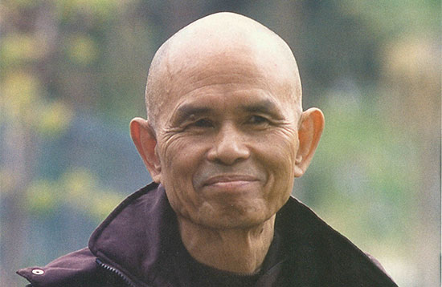

Les racines de la pleine conscience
La pratique de la pleine conscience est issue des sagesses orientales et en particulier du bouddhisme dans lequel elle a une place centrale.
La méditation est une pratique ancestrale datant de plusieurs milliers d’années. Au moins 4 000 ans selon les fresques de yogis découvertes en Inde dans la vallée de l’Indus.
Les enseignements bouddhistes datent pour leur part d’il y a 2500 ans environ suite à l’Eveil (libération de la souffrance) du prince Siddartha Gautama,plus connu ensuite sous le nom de Bouddha.
Dans l’enseignement bouddhiste la pleine conscience est une partie du noble sentier octuple qui est le chemin éthique enseigné par le Bouddha.
Le maître zen vietnamien Thich Nhat Hanh a été le premier à partager la pratique de la
pleine conscience en dehors des monastères.
Lors de la guerre du Vietnam, il a été un fervent artisan de la paix et a proposé la
pratique de la pleine conscience aux infirmiers, infirmières et travailleurs sociaux
engagés dans l’aide aux victimes des conflits.
Il a fondé l’Ecole de la Jeunesse et du Service Social qui compte plus de 10 000
bénévoles, et a été nominé au Prix Nobel de la Paix en 1967, par son ami, Martin Luther
King.
En 1982, Thich Nhat Hanh a fondé le mondialement célèbre monastère du Village des
Pruniers, à Thénac, en Dordogne.
Chaque année des milliers de personnes viennent y pratiquer la pleine conscience et
suivre les enseignements bouddhistes.
Pour lui, « La pleine conscience est l’énergie qui nous permet d’être conscients de ce qui se passe dans le moment présent. Pratiquer la pleine conscience c’est ramener corps et esprit vers le moment présent et chaque fois que l’on pratique cela on redevient vivant. Le seul moment où l’on est vivant, où l’on peut toucher la vie, c’est le moment présent, l’ici et maintenant...».
Légende photo : Thich Nhat Hanh
